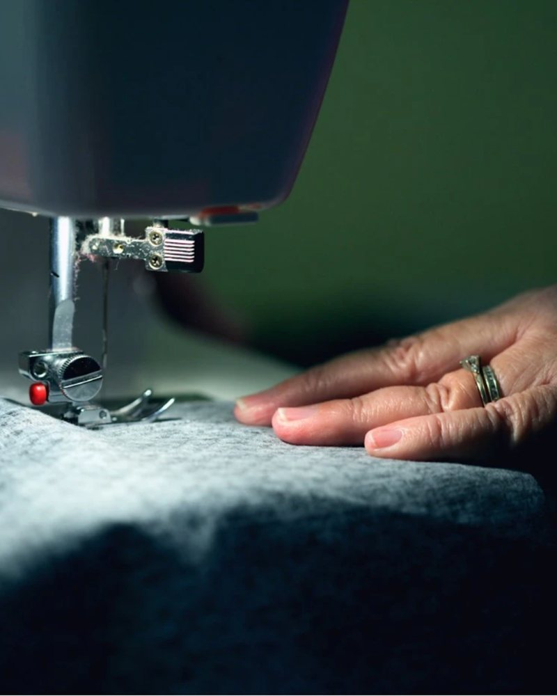

Ruimte voor talent
Naaimachines, stoffen en begeleiding. De basis om naaivaardigheden te ontwikkelen en stappen te zetten naar een eigen onderneming.
Zes studenten van de Hogeschool van Amsterdam bouwen een naaiatelier in Tanger. Vrouwen leren er naaien, ondernemen en werken aan hun eigen inkomen.

Naaimachines, stoffen en begeleiding. De basis om naaivaardigheden te ontwikkelen en stappen te zetten naar een eigen onderneming.
Een speelhoek waar kinderen onder begeleiding spelen, zodat moeders met jonge kinderen met een gerust hart kunnen meedoen.
Dat is ons doel: elk jaar 40 vrouwen begeleiden op weg naar een zelfstandige toekomst.

We richten een plek in Tanger in met naaimachines, werktafels, stoffen en naaibenodigdheden. Daar leren vrouwen naaien en ontdekken ze hoe ze met hun talent een eigen inkomen kunnen verdienen.
Ondernemen en zelfvertrouwen horen daarbij. Uiteindelijk willen we dat vrouwen hun eigen werk verkopen, op de markten van Marokko.
We zijn zes HBO-studenten van de Hogeschool van Amsterdam. Maneh Atelier begon in de minor Managen van Creativiteit en Innovatie, en we willen er echt een verschil mee maken.
Hier komen jullie zes foto's en namen, elk in een borduurring.
Met jouw donatie richten we het atelier in. We werken het opgehaalde bedrag zelf bij, zodat je ziet hoe ver we zijn.
Je kiest zelf je bedrag in Tikkie, bijvoorbeeld €5, €10, €25 of €50. Elk bedrag is welkom.
Doneer via Tikkie Een vrijwillige donatie, zonder aankoop of tegenprestatie.